Our soil respiration run finished — the raw plot readings are sitting in a csv in my lab folder. I need a short deck for Thursday's group meeting out of it: title slide, one slide per treatment group with its mean and standard deviation of CO2 flux, and a closing slide stating which treatment respired most. Every slide needs speaker notes I can read from. Save the deck beside the data.
{
"config": [
{
"type": "execute",
"parameters": {
"command": "mkdir -p /home/user/lab/soilresp && python3 -c \"\nimport random\nrandom.seed(11)\nrows=[('plot_id','treatment','co2_flux_umol_m2_s','soil_temp_c','date')]\nbase={'Control':1.85,'Biochar':2.71,'Compost':3.42,'Nitrogen':2.30}\ni=1\nfor t,b in base.items():\n for r in range(7):\n rows.append(('P%03d'%i,t,round(b+random.uniform(-0.35,0.35),2),round(14.2+random.uniform(-1.5,1.5),1),'2024-06-%02d'%(3+r)))\n i+=1\nopen('/home/user/lab/soilresp/plot_readings.csv','w').write('\\n'.join(','.join(str(c) for c in r) for r in rows)+'\\n')\n\" && printf 'Soil Respiration Trial - Kettle Ridge Field Station\\nSummer 2024 campaign, 28 plots, four treatments.\\nStatic chamber measurements, 4 replicate days.\\n' > /home/user/lab/soilresp/readme.txt",
"shell": true
}
},
{
"type": "open",
"parameters": {
"path": "/home/user/lab/soilresp/plot_readings.csv"
}
}
],
"evaluator": {
"func": "check_include_exclude",
"result": {
"type": "vm_command_line",
"command": "echo ostg-v16",
"shell": true
},
"expected": {
"type": "rule",
"rules": {
"include": [
"__judge_decides__"
]
}
}
}
}
step 1 01:19:41
THINKINGThe CSV import dialog is open in LibreOffice. I need to understand the data first. Let me examine the columns: plot_id, treatment, co2_flux_umol_m2_s, soil_temp_c, date. I should import this data, but actually the best approach for the task is to compute statistics per treatment. Let me first inspect the actual CSV file to understand all treatments. Let me cancel this dialog and look at the file via terminal, which gives me full control over the data.
Actually, the task is to build a presentation deck. The cleanest path: read the CSV to get all treatments and compute mean/std, then create an Impress deck. But I should do the computation reliably. Let me use a terminal to read the CSV fully. Let me cancel the import dialog first, then open a terminal.
ACTIONI'll start by examining the CSV data to understand all treatment groups before building the deck. Let me cancel this import dialog and open a terminal to read the file.
EXECUTED (pyautogui in VM)pyautogui.click(1208, 878)
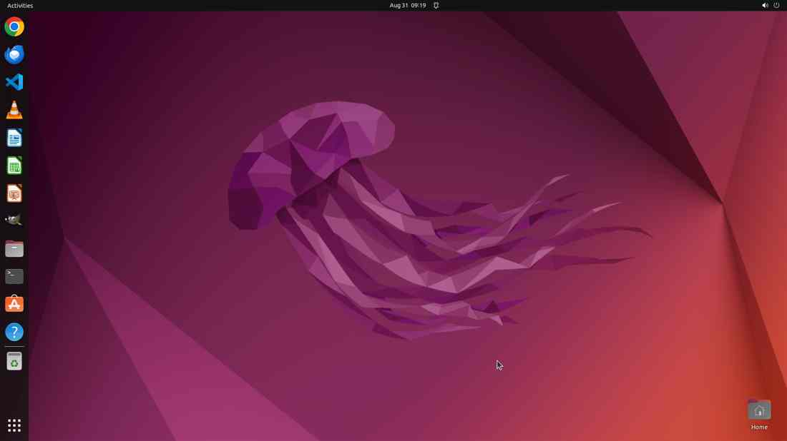
step 2 01:19:50
THINKINGI need to inspect the CSV fully. Let me open a terminal to read the file and find all treatments and compute statistics. The terminal icon is in the left dock (the black square with a prompt, around y=452). Let me click it.
ACTIONLet me open a terminal to inspect the CSV data and find the lab folder location.
THINKINGThe find is still running or produced no output yet. Let me press Enter again to be safe and wait. Actually the command line shows it typed but not executed visibly - the cursor is at end of line after "2>/dev/null". The Enter may not have registered. Let me press Enter.
EXECUTED (pyautogui in VM)pyautogui.typewrite("cat /home/user/lab/soilresp/plot_readings.csv")
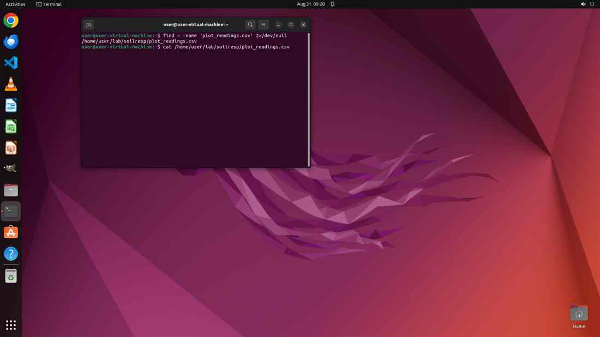
step 8 01:21:04
THINKINGThe command was typed but the terminal window is small and the output may have scrolled. Let me press Enter and maximize the terminal first for better visibility. Actually let me maximize the window, then re-run. Let me press Enter first.
EXECUTED (pyautogui in VM)pyautogui.press("return")
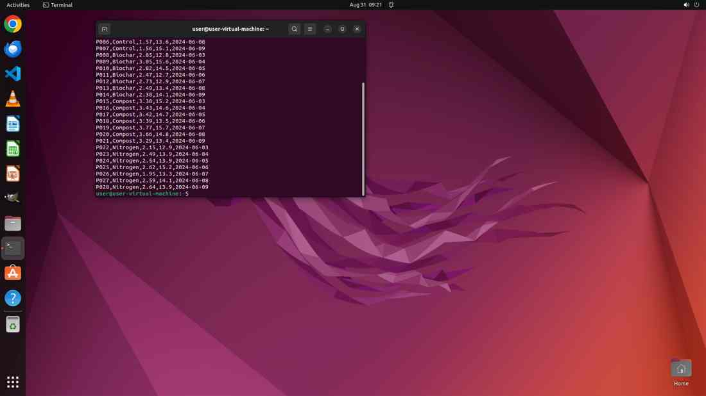
step 9 01:21:30
THINKINGNow I can read the data. The visible portion shows P006-P028. I need P001-P007 (Control) too which scrolled off. From the earlier import dialog I saw:
P001,Control,1.82,14.4
P002,Control,2.15,14.1
P003,Control,1.86,14.5
P004,Control,1.63,14.2
P005,Control,1.94,15.1
P006,Control,1.57,13.6
P007,Control,1.56,15.1
Visible now:
P008,Biochar,2.85
P009,Biochar,3.05
P010,Biochar,2.82
P011,Biochar,2.47
P012,Biochar,2.73
P013,Biochar,2.49
P014,Biochar,2.38
P015,Compost,3.38
P016,Compost,3.43
P017,Compost,3.42
P018,Compost,3.39
P019,Compost,3.77
P020,Compost,3.66
P021,Compost,3.29
P022,Nitrogen,2.15
P023,Nitrogen,2.49
P024,Nitrogen,2.54
P025,Nitrogen,2.62
P026,Nitrogen,1.95
P027,Nitrogen,2.59
P028,Nitrogen,2.64
So 4 treatments: Control, Biochar, Compost, Nitrogen, 7 plots each (28 total).
Rather than compute manually, let me use a quick awk/python to get mean and std per treatment to be accurate. Let me use python3. I'll compute mean and sample standard deviation (ddof=1 is typical for "standard deviation" in such contexts, but ambiguous). I'll report sample std. Actually, for a group of plots, the standard deviation of CO2 flux within the group — population vs sample. I'll use sample std (n-1) as it's the common descriptive statistic in science. Let me compute both to be safe but present sample std.
Let me run a python one-liner.
ACTIONI can see the data. Let me compute the mean and standard deviation per treatment precisely with Python.
TOOL CALL<tool_call>
<function=computer_use>
<parameter=action>
type
</parameter>
<parameter=text>
python3 -c "import csv,statistics as s; d={}; [d.setdefault(r['treatment'],[]).append(float(r['co2_flux_umol_m2_s'])) for r in csv.DictReader(open('/home/user/lab/soilresp/plot_readings.csv'))]; [print(k, 'n=',len(v), 'mean=%.3f'%s.mean(v), 'std=%.3f'%s.stdev(v)) for k,v in d.items()]"
</parameter>
</function>
</tool_call>
EXECUTED (pyautogui in VM)pyautogui.typewrite("python3 -c \"import csv,statistics as s; d={}; [d.setdefault(r['treatment'],[]).append(float(r['co2_flux_umol_m2_s'])) for r in csv.DictReader(open('/home/user/lab/soilresp/plot_readings.csv'))]; [print(k, 'n=',len(v), 'mean=%.3f'%s.mean(v), 'std=%.3f'%s.stdev(v)) for k,v in d.items()]\"")
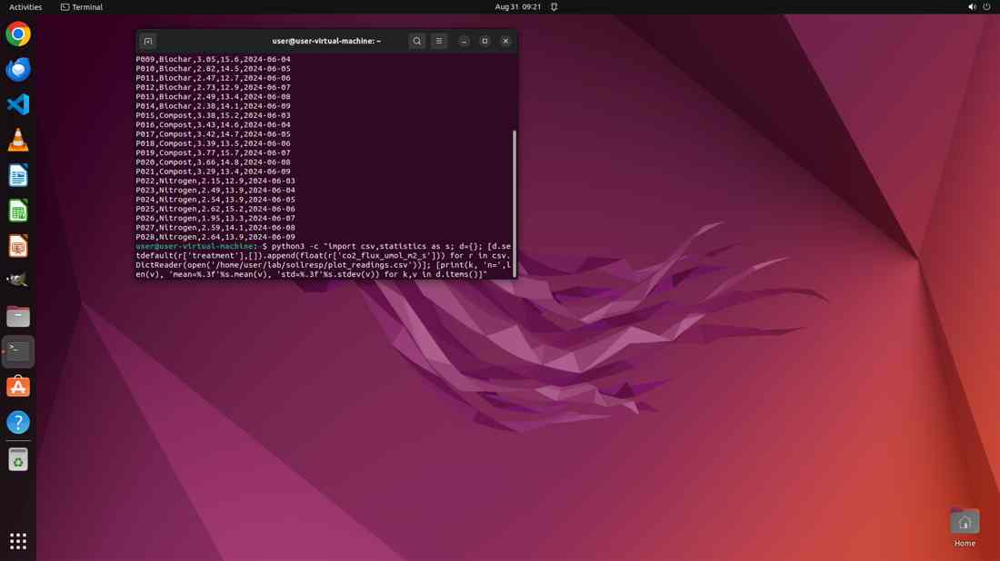
step 10 01:21:44
THINKINGThe command was typed but not executed (Enter didn't register or it's still on the command line). The window is small. Let me maximize the terminal to see output better, then press Enter. Let me press Enter first.
ACTIONThe window is small; let me maximize it for clarity, then run the command.
EXECUTED (pyautogui in VM)pyautogui.doubleClick(624, 76)
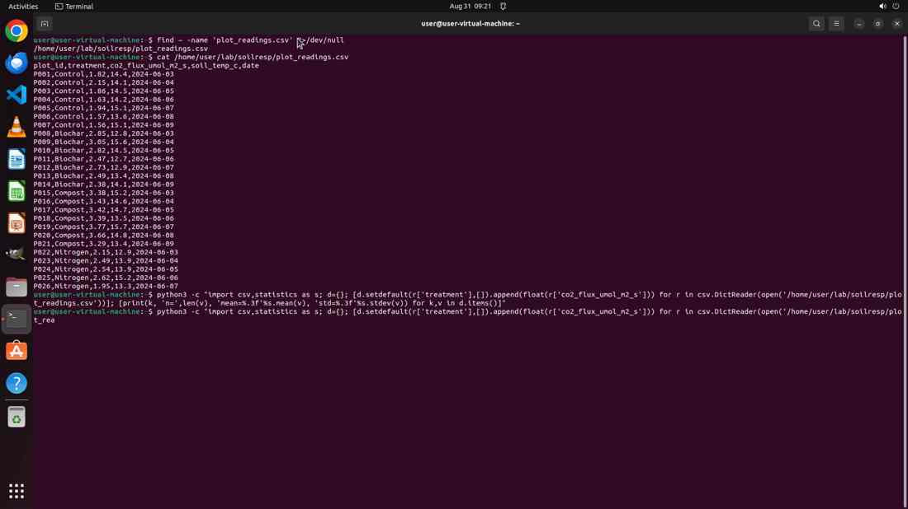
step 11 01:22:16
THINKINGNow I can see the full data clearly. Let me verify all values:
Control: P001 1.82, P002 2.15, P003 1.86, P004 1.63, P005 1.94, P006 1.57, P007 1.56
Biochar: P008 2.85, P009 3.05, P010 2.82, P011 2.47, P012 2.73, P013 2.49, P014 2.38
Compost: P015 3.38, P016 3.43, P017 3.42, P018 3.39, P019 3.77, P020 3.66, P021 3.29
Nitrogen: P022 2.15, P023 2.49, P024 2.54, P025 2.62, P026 1.95, P027 2.59, P028 2.64
The python command is still on the command line (not executed). Let me press Enter to run it.
ACTIONNow I can read all the data. Let me run the statistics command.
EXECUTED (pyautogui in VM)pyautogui.press("return")
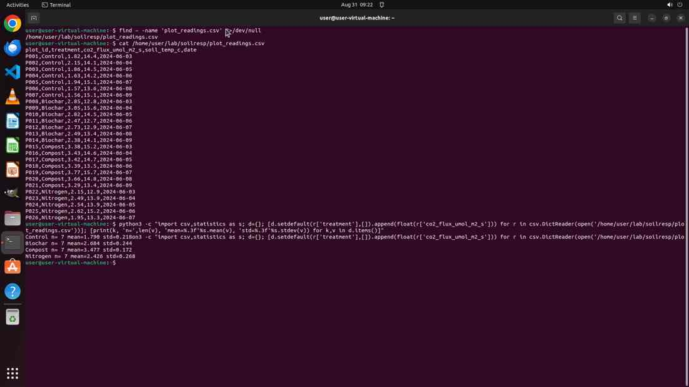
step 12 01:22:33
THINKINGResults (sample std, n-1):
- Control: n=7, mean=1.790, std=0.218
- Biochar: n=7, mean=2.684, std=0.244
- Compost: n=7, mean=3.477, std=0.172
- Nitrogen: n=7, mean=2.426, std=0.268
Compost has the highest mean (3.477) → respired most.
Now I need to build a LibreOffice Impress deck with:
1. Title slide
2. Control slide (mean, std)
3. Biochar slide
4. Compost slide
5. Nitrogen slide
6. Closing slide: which treatment respired most (Compost)
Every slide needs speaker notes. Save beside the data: /home/user/lab/soilresp/.
I'll create the .pptx. The task says "deck" — a presentation. I should save it in the lab folder. Format: .pptx is safest for LibreOffice Impress. I'll create it via the Impress GUI using the Outline view which is efficient for text + notes. Actually, notes via outline view is tricky. Better approach: use Impress, add slides, put title + body, then add speaker notes via the Notes view/panel.
Let me think about the most reliable GUI approach. Impress has an Outline view (View > Outline) where I can type titles and bullet content quickly for all slides. But speaker notes can't be entered in outline view easily. So plan:
1. Open Impress new presentation.
2. Use Outline view to enter all titles + content bullets for 6 slides quickly.
3. Switch to Normal view, go slide by slide, add speaker notes in the notes panel.
4. Save as pptx to /home/user/lab/soilresp/.
Let me open LibreOffice Impress. The orange icon in the dock at y~315 is Impress. Let me click it.
Actually, a cleaner and more reliable path for notes is to build each slide in Normal view. But outline is faster for text. Let me use outline for titles/content, then notes panel.
Let me click the Impress icon (orange, y≈315).
ACTIONI now have all statistics:
- **Control:** mean 1.790, std 0.218
- **Biochar:** mean 2.684, std 0.244
- **Compost:** mean 3.477, std 0.172 ← highest
- **Nitrogen:** mean 2.426, std 0.268
Compost respired most. Now let me open LibreOffice Impress to build the deck.
EXECUTED (pyautogui in VM)pyautogui.click(32, 470)
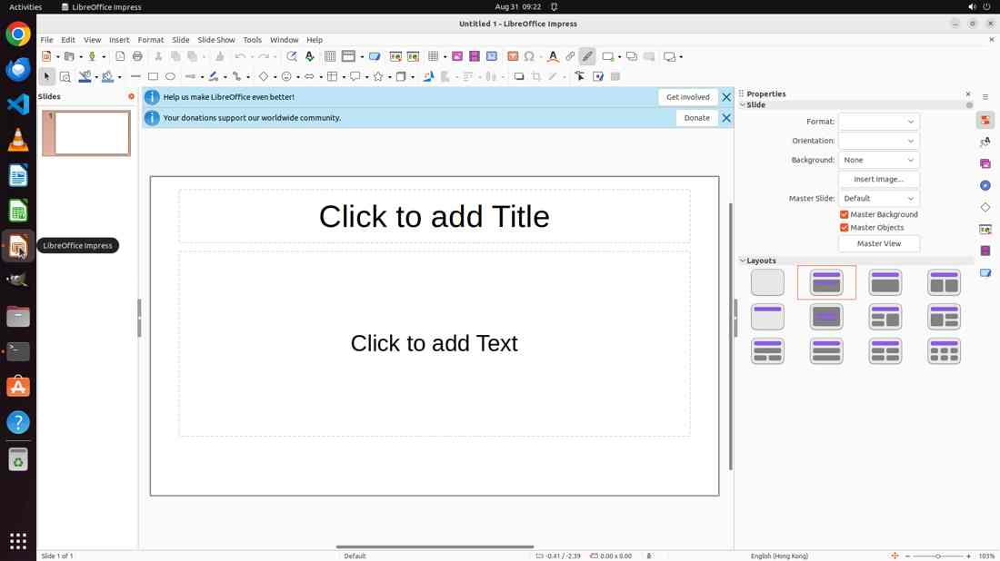
step 13 01:23:03
THINKINGImpress is open. Let me close the notification banners first, then use the Outline view to enter all slide titles and content quickly. Let me close both info banners (X at 928,124 and 928,151).
Then View > Outline. In Outline view, I type the title of slide 1, Enter for body text, Tab to demote, Shift+Tab to promote back to new slide title.
Outline structure I want:
Slide 1: Title: "Soil Respiration: CO2 Flux by Treatment" / subtitle text
Actually the title slide should be a title slide. In outline view, the first line becomes slide 1 title. I can add a subtitle as a body line.
Let me design content:
Slide 1 title: Soil Respiration Run — CO₂ Flux by Treatment
body: Group meeting · Thursday · Data: plot_readings.csv (7 plots per treatment)
Slide 2 title: Control
body: Mean CO₂ flux: 1.790 µmol m⁻² s⁻¹
Std dev: 0.218 µmol m⁻² s⁻¹
n = 7 plots
Slide 3 title: Biochar
body: Mean CO₂ flux: 2.684 µmol m⁻² s⁻¹
Std dev: 0.244 µmol m⁻² s⁻¹
n = 7 plots
Slide 4 title: Compost
body: Mean CO₂ flux: 3.477 µmol m⁻² s⁻¹
Std dev: 0.172 µmol m⁻² s⁻¹
n = 7 plots
Slide 5 title: Nitrogen
body: Mean CO₂ flux: 2.426 µmol m⁻² s⁻¹
Std dev: 0.268 µmol m⁻² s⁻¹
n = 7 plots
Slide 6 title: Conclusion
body: The Compost treatment respired most (highest mean CO₂ flux: 3.477 µmol m⁻² s⁻¹).
Notes for each slide:
1: Intro to the run, what was measured.
2: Control baseline interpretation.
3: Biochar interpretation.
4: Compost interpretation (highest).
5: Nitrogen interpretation.
6: Closing - compost highest.
Let me close banners and switch to Outline view. I'll type units using plain text to avoid issues: I'll write "umol m-2 s-1" or use µmol. Typing µ and superscript is hard. I'll use "µmol/m²/s" — the µ and ² characters can be typed via the type action (Unicode). Let me use "µmol m⁻² s⁻¹" — the ⁻² and ⁻¹ superscripts may not type reliably. Safer to write "umol CO2 per m2 per s". I'll use "µmol m⁻² s⁻¹" but fall back to plain "umol/m2/s". Let me just use "µmol m-2 s-1" to be safe and readable. Actually simpler and unambiguous: "µmol CO2 m⁻² s⁻¹". I'll type with the type action; if superscripts don't render I'll still have readable text. To be safe I'll use "umol/m2/s".
Let me proceed. Close banners.
ACTIONImpress is open. Let me close the notification banners and switch to Outline view for fast text entry.
EXECUTED (pyautogui in VM)pyautogui.click(205, 125)
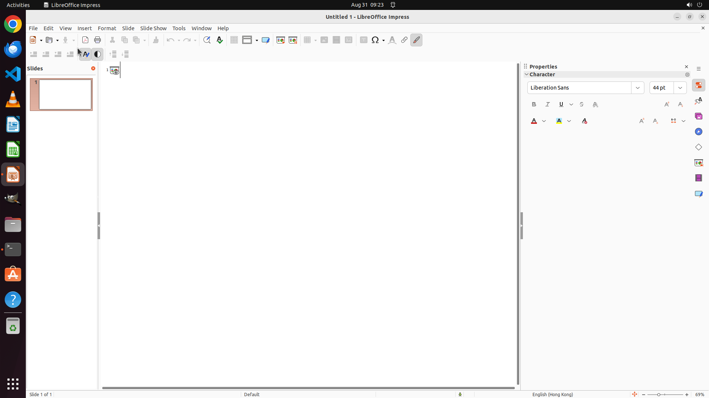
step 17 01:24:16
THINKINGOutline view is active with cursor ready at slide 1 title. Now I'll type the full outline. The outline editing works with Tab/Shift+Tab. Let me type:
Line 1 (title): Soil Respiration Run — CO2 Flux by Treatment
Enter → becomes body level (demoted automatically? In Impress outline, pressing Enter after a title creates a new title line at same level. I need Tab to demote to body.)
Actually in Impress Outline: after typing title and pressing Enter, the new line is a title (level 1). To make it body text, press Tab. Let me structure with explicit Tab presses.
Sequence:
- type "Soil Respiration Run — CO2 Flux by Treatment"
- Enter, Tab → body level; type "Group meeting deck · Thursday · Source: plot_readings.csv (7 plots per treatment)"
- Enter, Shift+Tab → new slide title; type "Control"
- Enter, Tab → body; type "Mean CO2 flux: 1.790 umol m-2 s-1"
- Enter (stays body level) → type "Std dev: 0.218 umol m-2 s-1"
- Enter → type "n = 7 plots"
- Enter, Shift+Tab → title "Biochar"
- Enter, Tab → body "Mean CO2 flux: 2.684 umol m-2 s-1"
- Enter "Std dev: 0.244 umol m-2 s-1"
- Enter "n = 7 plots"
- Enter Shift+Tab title "Compost"
- Enter Tab "Mean CO2 flux: 3.477 umol m-2 s-1"
- Enter "Std dev: 0.172 umol m-2 s-1"
- Enter "n = 7 plots"
- Enter Shift+Tab title "Nitrogen"
- Enter Tab "Mean CO2 flux: 2.426 umol m-2 s-1"
- Enter "Std dev: 0.268 umol m-2 s-1"
- Enter "n = 7 plots"
- Enter Shift+Tab title "Conclusion"
- Enter Tab "The Compost treatment respired most — highest mean CO2 flux (3.477 umol m-2 s-1)."
I'll type the whole thing as one type action with \n and \t embedded. The type action supports newlines and tabs. Let me build the string.
Wait: after Enter, a new line is created at the SAME level as the previous line? No. In outline view, Enter creates a new line at the same outline level as the current line. So after a body line, Enter gives another body line (good, that's why I only Shift+Tab before slide titles). After a title line, Enter gives a new title line, so I Tab to demote to body. Correct.
But careful: after typing body lines and then Enter + Shift+Tab to make a title — Shift+Tab promotes one level (body→title). Good.
Let me construct the full text with literal newline and tab characters. I'll use \n for Enter and \t for Tab, and shift+tab isn't a character — I cannot send shift+tab via type. So I must send Tab and Shift+Tab as key presses, not within the type string.
Therefore I need to interleave type and key actions. Let me do a sequence of actions:
1. type "Soil Respiration Run — CO2 Flux by Treatment"
2. key Return
3. key Tab (demote to body)
4. type "Group meeting deck | Thursday | Source: plot_readings.csv (7 plots per treatment)"
5. key Return
6. key shift+Tab (promote to title = slide 2)
7. type "Control"
8. key Return
9. key Tab
10. type "Mean CO2 flux: 1.790 umol m-2 s-1"
11. key Return
12. type "Std dev: 0.218 umol m-2 s-1"
13. key Return
14. type "n = 7 plots"
15. key Return
16. key shift+Tab
17. type "Biochar"
18. key Return
19. key Tab
20. type "Mean CO2 flux: 2.684 umol m-2 s-1"
21. key Return
22. type "Std dev: 0.244 umol m-2 s-1"
23. key Return
24. type "n = 7 plots"
25. key Return
26. key shift+Tab
27. type "Compost"
28. key Return
29. key Tab
30. type "Mean CO2 flux: 3.477 umol m-2 s-1"
31. key Return
32. type "Std dev: 0.172 umol m-2 s-1"
33. key Return
34. type "n = 7 plots"
35. key Return
36. key shift+Tab
37. type "Nitrogen"
38. key Return
39. key Tab
40. type "Mean CO2 flux: 2.426 umol m-2 s-1"
41. key Return
42. type "Std dev: 0.268 umol m-2 s-1"
43. key Return
44. type "n = 7 plots"
45. key Return
46. key shift+Tab
47. type "Conclusion"
48. key Return
49. key Tab
50. type "The Compost treatment respired most — highest mean CO2 flux (3.477 umol m-2 s-1)."
I'll batch these into one tool call as a list of actions. The em dash "—" typed via type should work. Let me use " - " instead to be safe with the em dash? The type action handles unicode fine generally. I'll keep em dash but risk. To be safe, use " - ". Actually let me use a normal hyphen to avoid encoding issues. I'll write "CO2 Flux by Treatment" title and use " - " separators.
Let me execute the big batch.
ACTIONOutline view is ready. I'll now type all six slides' titles and content in one batched sequence, using Tab/Shift+Tab to control outline levels.
TOOL CALL<tool_call>
<function=computer_use>
<parameter=action>
type
</parameter>
<parameter=text>
Soil Respiration Run - CO2 Flux by Treatment
</parameter>
</function>
</tool_call>
EXECUTED (pyautogui in VM)pyautogui.typewrite("Soil Respiration Run - CO2 Flux by Treatment")
step 18 01:24:32
THINKINGThe title was entered; it auto-converted " - " to an en dash "–" (autocomplete of " - " to "–"? It shows "Run – CO2"). That's fine, looks good. Now let me continue with the batch of Return/Tab/type actions. I'll batch the remaining content.
ACTIONTitle entered (LibreOffice converted the dash to an en-dash, which looks fine). Now I'll batch the rest of the outline: body text and all treatment slides.
EXECUTED (pyautogui in VM)pyautogui.press("return")
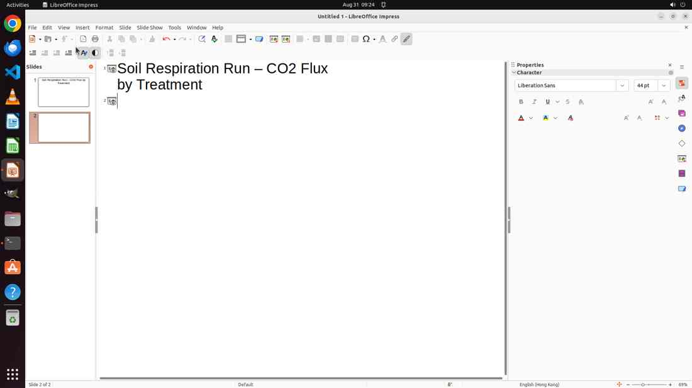
step 19 01:24:57
THINKINGPressing Enter created slide 2 (a new title-level line). So Enter after a title creates a NEW title, not a body line. That means to get a body/subtitle on slide 1, I need Tab now to demote this new line to body of slide 1. Good — I'm at slide 2 title level now; press Tab to make it the subtitle of slide 1.
So my earlier plan: Tab demotes current line. Good. Let me now do the full remaining sequence in one batch:
- Tab (demote to body of slide1)
- type subtitle
- Return (new title = slide 2)
- type "Control"
- Return (new body? No — Return after title creates new title). Wait, I need body lines under Control. So after typing "Control" and Return, I get a new title (slide3 level). I must Tab to demote to body. Then subsequent Returns keep body level. Then Shift+Tab to promote to next title.
So pattern per slide:
[at title] type NAME
Return → new title
Tab → demote to body of this slide
type body line1
Return (body)
type body line2
Return (body)
type body line3
Return → new title (since last line was body? No—Return after body creates another body line, not a title!)
Hmm. Important: In outline view, Return creates a new line at the SAME level as current. So after a body line, Return gives another body line. To start a new slide (title), I must press Return then Shift+Tab (promote).
But after a TITLE line, Return gives a new TITLE line (new slide). So:
- Start: at title "Control". Return → new title (slide). Tab → demote to body. type body1. Return → body. type body2. Return → body. type body3. Return → body (new empty body line). Shift+Tab → promote to title = next slide. type "Biochar". ...
So the "new slide title" step is: (from last body line) Return, Shift+Tab, type title.
And the "first body line under a new title" step is: (at title) Return, Tab, type body.
Let me redo the full sequence starting from current state: cursor is at slide 2 title line (empty), slide 1 has title only.
Plan from here:
A. Tab → demote current empty line to body of slide 1
B. type "Group meeting deck (Thursday) - Source: plot_readings.csv, 7 plots per treatment"
C. Return → new body line (still slide1 body). I want next slide title, so: Shift+Tab → promote to title (slide 2)
D. type "Control"
E. Return, Tab → body; type "Mean CO2 flux: 1.790 umol m-2 s-1"
F. Return; type "Std dev: 0.218 umol m-2 s-1"
G. Return; type "n = 7 plots"
H. Return, Shift+Tab → title; type "Biochar"
I. Return, Tab; type "Mean CO2 flux: 2.684 umol m-2 s-1"
J. Return; type "Std dev: 0.244 umol m-2 s-1"
K. Return; type "n = 7 plots"
L. Return, Shift+Tab; type "Compost"
M. Return, Tab; type "Mean CO2 flux: 3.477 umol m-2 s-1"
N. Return; type "Std dev: 0.172 umol m-2 s-1"
O. Return; type "n = 7 plots"
P. Return, Shift+Tab; type "Nitrogen"
Q. Return, Tab; type "Mean CO2 flux: 2.426 umol m-2 s-1"
R. Return; type "Std dev: 0.268 umol m-2 s-1"
S. Return; type "n = 7 plots"
T. Return, Shift+Tab; type "Conclusion"
U. Return, Tab; type "The Compost treatment respired most - highest mean CO2 flux (3.477 umol m-2 s-1)."
I'll batch this as a list of actions. Note "type" for lines with autocorrect en-dash risk on " - " — but within a longer line like "meeting deck (Thursday) - Source" the " - " may convert to en dash; acceptable. For body lines there are no " - ". Good.
Let me build the batch.
ACTIONNow I understand the outline behavior: Enter keeps the same level, Tab demotes, Shift+Tab promotes. I'll batch the entire remaining outline in one sequence.
THINKINGNow it's back to slide 1 (1 of 1), the empty line is demoted to body (32pt font, body level). Now I'll batch the full remaining sequence. I'm at body level of slide 1. Let me type the subtitle then continue with all slides.
ACTIONNow at body level of slide 1. I'll batch the full remaining outline in one sequence.
TOOL CALL<tool_call>
<function=computer_use>
<parameter=action>
type
</parameter>
<parameter=text>
Group meeting (Thursday) | Source: plot_readings.csv | 7 plots per treatment
</parameter>
</function>
</tool_call>
EXECUTED (pyautogui in VM)pyautogui.typewrite("Group meeting (Thursday) | Source: plot_readings.csv | 7 plots per treatment")
step 21 01:25:23
THINKINGSubtitle entered on slide 1. Now I'll batch the rest. I'm at body level. Next: Return (new body line), Shift+Tab (promote to title = slide 2 "Control"), then type each slide. Let me batch the whole remaining sequence now.
Sequence from here (currently at end of slide1 body line):
Return, Shift+Tab, type "Control", Return, Tab, type mean, Return, type std, Return, type n, Return, Shift+Tab, type "Biochar", Return, Tab, type mean, Return, type std, Return, type n, Return, Shift+Tab, type "Compost", Return, Tab, type mean, Return, type std, Return, type n, Return, Shift+Tab, type "Nitrogen", Return, Tab, type mean, Return, type std, Return, type n, Return, Shift+Tab, type "Conclusion", Return, Tab, type conclusion body.
Let me batch all of this.
ACTIONSubtitle is set. Now I'll batch all four treatment slides plus the conclusion in one sequence.
EXECUTED (pyautogui in VM)pyautogui.press("return")
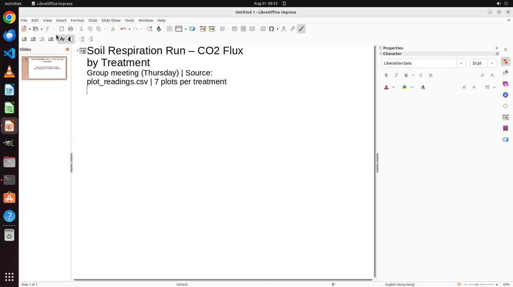
step 22 01:25:34
THINKINGNew empty body line. Now Shift+Tab to promote to a new title (slide 2). Then type "Control", then Return, Tab, body lines. Let me batch the entire rest now as one list of actions. I'll be careful about the type strings containing "umol m-2 s-1" — the "m-2" has a hyphen but not " - " (space-hyphen-space), so no en-dash conversion. Good.
Let me batch it all.
EXECUTED (pyautogui in VM)pyautogui.hotkey("shift", "tab")
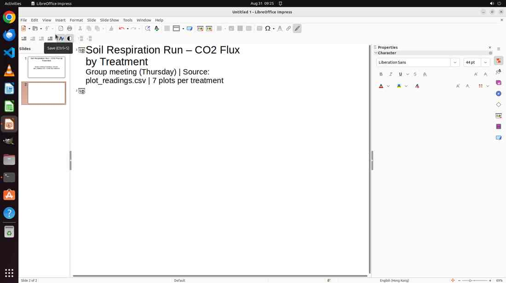
step 23 01:25:46
THINKINGNow at slide 2 title level (44pt). Now I'll batch the entire remaining content. I'm confident about the pattern. Let me send the whole sequence in one batch.
ACTIONNow at slide 2 title level. I'll batch the entire remaining outline for all treatment slides and the conclusion.
TOOL CALL<tool_call>
<function=computer_use>
<parameter=action>
type
</parameter>
<parameter=text>
Control
</parameter>
</function>
</tool_call>
EXECUTED (pyautogui in VM)pyautogui.typewrite("Control")
step 24 01:25:57
THINKING"Control" is now slide 2 title. Now I'll batch the entire rest of the outline. I'm confident in the pattern. Let me send it all in one big batch of actions.
ACTIONNow I'll batch all remaining content: the Control body, then Biochar, Compost, Nitrogen slides, and the Conclusion slide.
EXECUTED (pyautogui in VM)pyautogui.press("return")
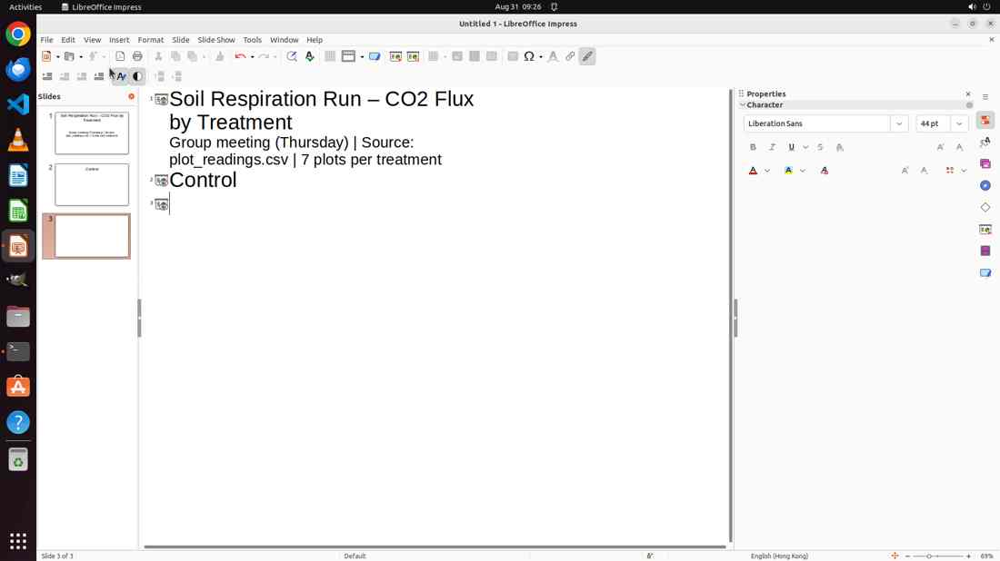
step 25 01:26:13
THINKINGEnter created slide 3 (new title). I need to Tab to demote this to body of Control. Then type body lines. I realize the individual key presses are each costing a screenshot round-trip. To be more efficient, I'll now batch the whole remainder. Let me batch: Tab, type mean line, Return, type std, Return, type n, Return, shift+Tab, type Biochar, Return, Tab, type mean, Return, type std, Return, type n, Return, shift+Tab, type Compost, Return, Tab, type mean, Return, type std, Return, type n, Return, shift+Tab, type Nitrogen, Return, Tab, type mean, Return, type std, Return, type n, Return, shift+Tab, type Conclusion, Return, Tab, type conclusion body.
Batching all these in one tool call.
ACTIONNow I'll batch the entire remainder in a single sequence — Control's stats plus the Biochar, Compost, Nitrogen, and Conclusion slides.
THINKINGNow it's back to slide 2 (2 of 2), and there's a bullet under Control (body level, 32pt). Now I can batch the full remaining sequence. The pattern: type line, Return (stays body), ... , and for a new slide: Return, shift+Tab (promote to title), type title, Return, Tab (demote to body).
Let me now do a large batch. I'm currently at empty body bullet under Control. I'll type the three body lines then continue.
ACTIONNow I'll batch all remaining content in one sequence.
TOOL CALL<tool_call>
<function=computer_use>
<parameter=action>
type
</parameter>
<parameter=text>
Mean CO2 flux: 1.790 umol m-2 s-1
</parameter>
</function>
</tool_call>
EXECUTED (pyautogui in VM)pyautogui.typewrite("Mean CO2 flux: 1.790 umol m-2 s-1")
step 27 01:26:43
THINKINGThe type action works fine. The individual calls are just slow. Let me now do the truly big batch — all remaining actions in a single tool call. I'm at end of "Mean CO2 flux: 1.790 umol m-2 s-1" line under Control.
Remaining sequence:
1. Return
2. type "Std dev: 0.218 umol m-2 s-1"
3. Return
4. type "n = 7 plots"
5. Return
6. shift+Tab (promote to new title, slide 3)
7. type "Biochar"
8. Return
9. Tab (demote to body)
10. type "Mean CO2 flux: 2.684 umol m-2 s-1"
11. Return
12. type "Std dev: 0.244 umol m-2 s-1"
13. Return
14. type "n = 7 plots"
15. Return
16. shift+Tab
17. type "Compost"
18. Return
19. Tab
20. type "Mean CO2 flux: 3.477 umol m-2 s-1"
21. Return
22. type "Std dev: 0.172 umol m-2 s-1"
23. Return
24. type "n = 7 plots"
25. Return
26. shift+Tab
27. type "Nitrogen"
28. Return
29. Tab
30. type "Mean CO2 flux: 2.426 umol m-2 s-1"
31. Return
32. type "Std dev: 0.268 umol m-2 s-1"
33. Return
34. type "n = 7 plots"
35. Return
36. shift+Tab
37. type "Conclusion"
38. Return
39. Tab
40. type "The Compost treatment respired most - highest mean CO2 flux (3.477 umol m-2 s-1)."
Let me batch this whole thing.
EXECUTED (pyautogui in VM)pyautogui.press("return")
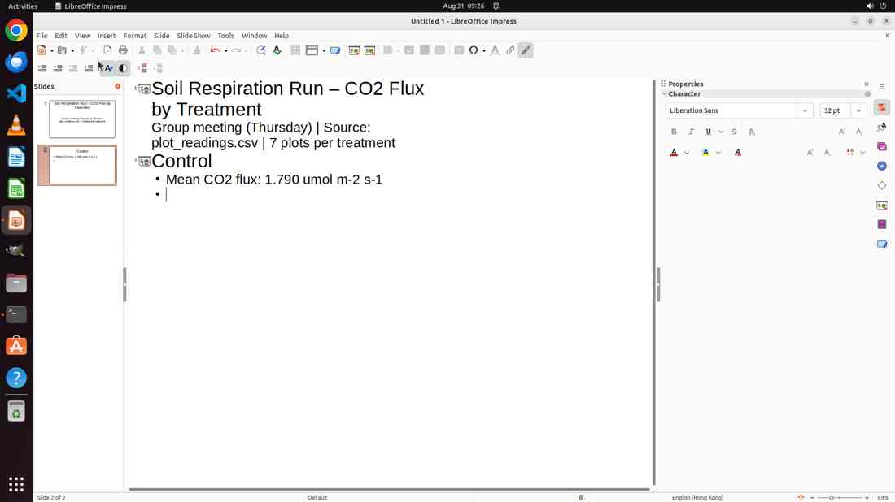
step 28 01:26:55
THINKINGGood, a new bullet line appeared under Control. Now I'll batch the rest. I'm at a body-level bullet. Now type "Std dev...", Return, "n=7...", Return, shift+Tab, "Biochar", Return, Tab, ... etc. Let me put all remaining into one batch.
ACTIONNow I'll batch all remaining content in one large sequence.
EXECUTED (pyautogui in VM)pyautogui.typewrite("Std dev: 0.218 umol m-2 s-1")
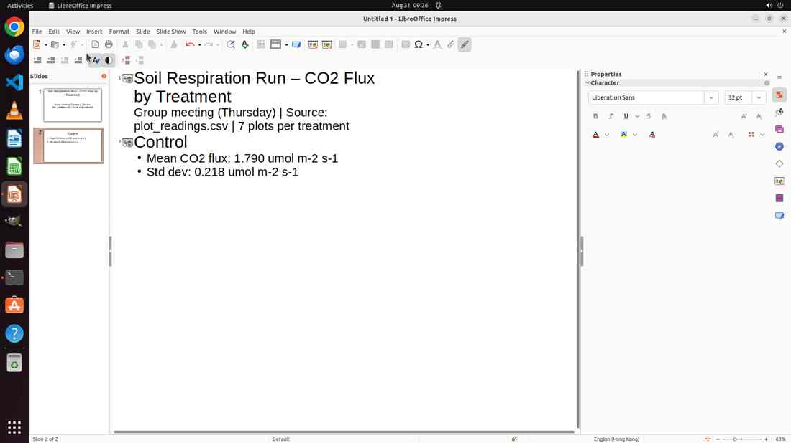
step 29 01:27:05
THINKINGEverything works. Now let me batch the rest efficiently in one big tool call to save round trips. I'm at end of "Std dev: 0.218..." line. Sequence:
Return, type "n = 7 plots", Return, shift+Tab, type "Biochar", Return, Tab, type mean, Return, type std, Return, type n, Return, shift+Tab, type "Compost", Return, Tab, type mean, Return, type std, Return, type n, Return, shift+Tab, type "Nitrogen", Return, Tab, type mean, Return, type std, Return, type n, Return, shift+Tab, type "Conclusion", Return, Tab, type conclusion body.
EXECUTED (pyautogui in VM)pyautogui.press("return")
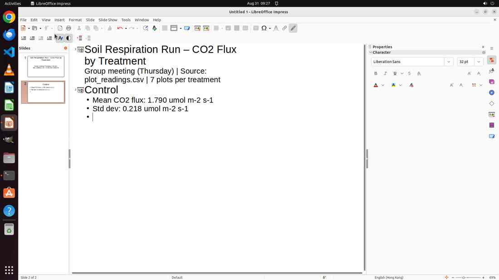
step 30 01:27:17
THINKINGNow I'll do the big batch. I'm at an empty bullet under Control. Let me type the "n = 7 plots" line, then continue creating all slides. I'll batch it all.
ACTIONNow I'll type the Control n-line and batch all remaining slides in one sequence.
TOOL CALL<tool_call>
<function=computer_use>
<parameter=action>
type
</parameter>
<parameter=text>
n = 7 plots
</parameter>
</function>
</tool_call>
EXECUTED (pyautogui in VM)pyautogui.typewrite("n = 7 plots")
step 31 01:27:27
THINKINGAutocorrect capitalized "n" to "N" (N = 7 plots). That's fine and arguably better. Now I'll create slide 3 (Biochar). I'm at end of "N = 7 plots" body line. Sequence: Return (new body line), shift+Tab (promote to title), type "Biochar", Return (new title), Tab (demote to body), type mean, Return, type std, Return, type n, Return, shift+Tab, type "Compost", ...
Let me batch the entire remainder now.
ACTIONControl slide is complete. Now I'll batch the Biochar, Compost, Nitrogen, and Conclusion slides all at once.
EXECUTED (pyautogui in VM)pyautogui.press("return")
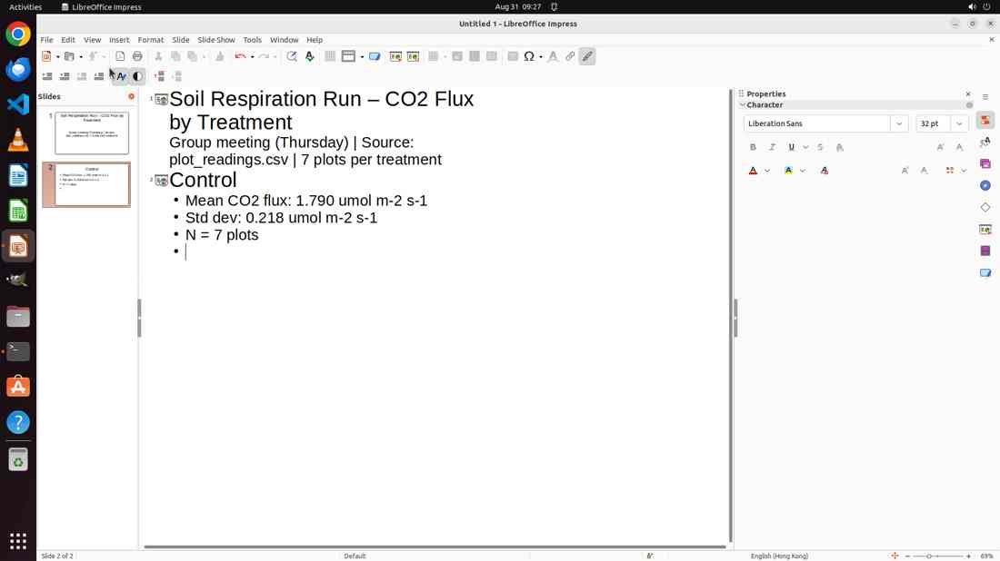
step 32 01:27:36
THINKINGNow I'm at an empty body bullet. Let me promote to title (shift+Tab) to start the Biochar slide, then type. I'll now batch: shift+Tab, type "Biochar", Return, Tab, type mean, Return, type std, Return, type n, Return, shift+Tab, type "Compost", Return, Tab, type mean, Return, type std, Return, type n, Return, shift+Tab, type "Nitrogen", Return, Tab, type mean, Return, type std, Return, type n, Return, shift+Tab, type "Conclusion", Return, Tab, type conclusion body.
I'll put all in one batch to save round trips.
EXECUTED (pyautogui in VM)pyautogui.hotkey("shift", "tab")
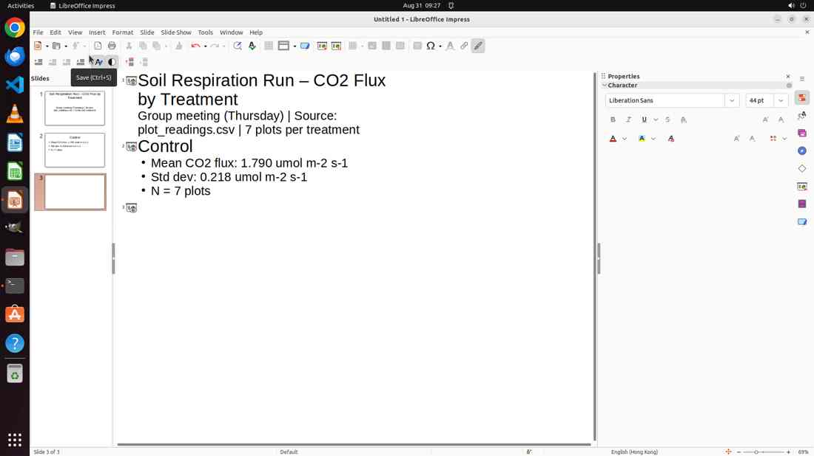
step 33 01:27:50
THINKINGNow slide 3 is created with cursor at its title (44pt). Now I'll type "Biochar" and then batch the rest. Let me type Biochar, then the pattern. I'll do a large batch now.
ACTIONNow at slide 3 title. I'll type Biochar and batch its content plus the remaining slides.
EXECUTED (pyautogui in VM)pyautogui.typewrite("Biochar")
step 34 01:27:57
THINKINGNow I'll batch the full remainder in one big sequence. I'm at end of "Biochar" title. Sequence:
Return, Tab, type mean, Return, type std, Return, type n, Return, shift+Tab, type Compost, Return, Tab, type mean, Return, type std, Return, type n, Return, shift+Tab, type Nitrogen, Return, Tab, type mean, Return, type std, Return, type n, Return, shift+Tab, type Conclusion, Return, Tab, type conclusion body.
Let me batch all of this in a single tool call.
ACTIONNow I'll batch the Biochar body and all remaining slides (Compost, Nitrogen, Conclusion) in a single sequence.
EXECUTED (pyautogui in VM)pyautogui.press("return")
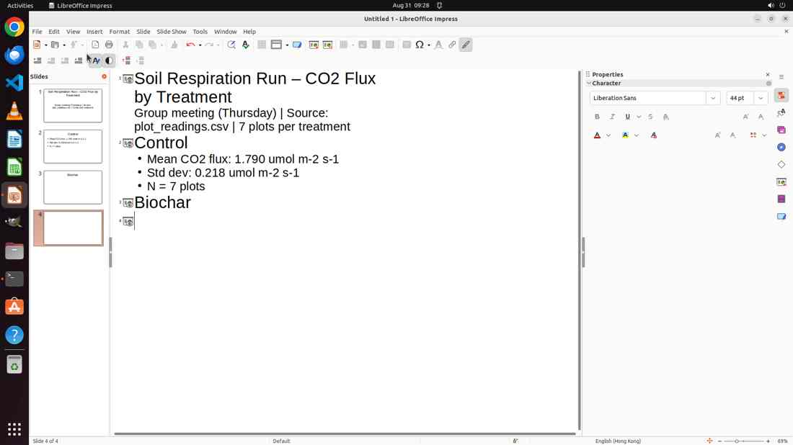
step 35 01:28:11
THINKINGEnter created slide 4 as a new title. I need to Tab to demote it to body of Biochar. Then type the body lines. Let me now do a big batch: Tab, type mean, Return, type std, Return, type n, Return, shift+Tab, type Compost, Return, Tab, type mean, Return, type std, Return, type n, Return, shift+Tab, type Nitrogen, Return, Tab, type mean, Return, type std, Return, type n, Return, shift+Tab, type Conclusion, Return, Tab, type conclusion body.
I'll batch it all in one call.
ACTIONNow I'll batch the Biochar body and all remaining slides (Compost, Nitrogen, Conclusion) in one sequence.
THINKINGNow slide 3 is back (3 of 3) with a body bullet under Biochar. Now I'll batch everything. I'm at the empty body bullet. Let me type the three body lines for Biochar, then continue to Compost, Nitrogen, Conclusion. I'll batch in one big sequence.
ACTIONNow I'll type all remaining content in one batched sequence — Biochar stats, Compost, Nitrogen, and Conclusion.
TOOL CALL<tool_call>
<function=computer_use>
<parameter=action>
type
</parameter>
<parameter=text>
Mean CO2 flux: 2.684 umol m-2 s-1
</parameter>
</function>
</tool_call>
EXECUTED (pyautogui in VM)pyautogui.typewrite("Mean CO2 flux: 2.684 umol m-2 s-1")
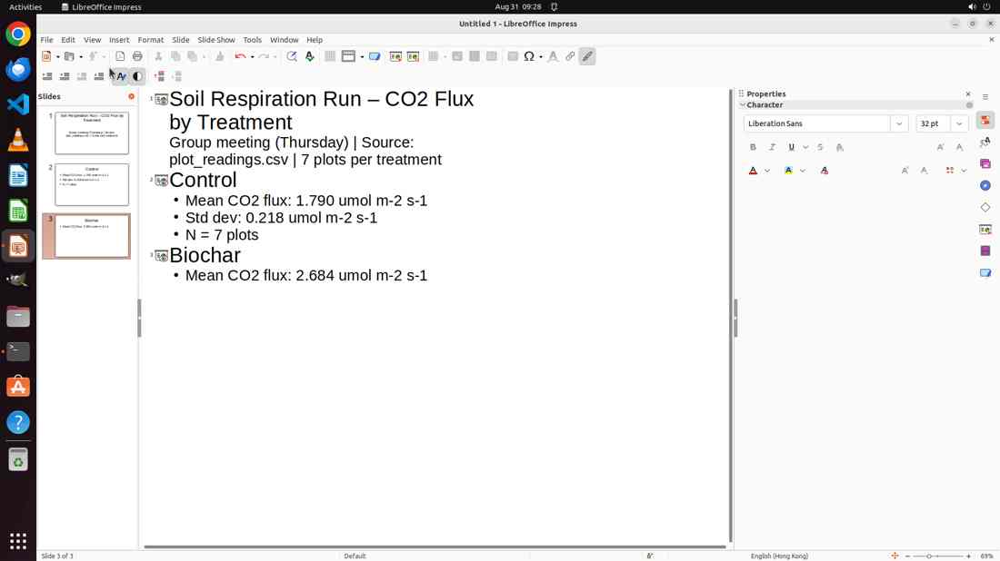
step 37 01:28:39
THINKINGThe pattern is reliable. Now let me batch the rest in one single tool call with multiple actions. From current position (end of Biochar mean line), the sequence:
1. Return
2. type "Std dev: 0.244 umol m-2 s-1"
3. Return
4. type "n = 7 plots"
5. Return
6. shift+Tab
7. type "Compost"
8. Return
9. Tab
10. type "Mean CO2 flux: 3.477 umol m-2 s-1"
11. Return
12. type "Std dev: 0.172 umol m-2 s-1"
13. Return
14. type "n = 7 plots"
15. Return
16. shift+Tab
17. type "Nitrogen"
18. Return
19. Tab
20. type "Mean CO2 flux: 2.426 umol m-2 s-1"
21. Return
22. type "Std dev: 0.268 umol m-2 s-1"
23. Return
24. type "n = 7 plots"
25. Return
26. shift+Tab
27. type "Conclusion"
28. Return
29. Tab
30. type "The Compost treatment respired most - highest mean CO2 flux (3.477 umol m-2 s-1)."
Let me batch all these in one tool call.
ACTIONNow I'll batch all the remaining content in one sequence.
EXECUTED (pyautogui in VM)pyautogui.press("return")
step 38 01:28:54
THINKINGNow I'm at an empty bullet under Biochar. Let me now truly batch the remaining actions in one tool call to reduce round trips. The type action and key action can be combined in one call as a list? No — each tool call is a single action. Wait, re-reading: "combine as many of the independent calls as possible" — but the computer function takes a single action per call. Actually the instructions say to batch actions into a single tool call using an actions array... but the function schema only accepts one action.
Looking again: the function `computer` takes a single `action`. So I cannot batch multiple actions in one call with this schema. The "batching" guidance refers to making multiple independent tool calls in the same assistant turn (parallel). But these are sequential/dependent (each depends on previous state), so they can't be parallel.
Given that, I must issue them one at a time. That's fine. Let me continue efficiently. I'll type the Biochar std line now.
EXECUTED (pyautogui in VM)pyautogui.typewrite("Std dev: 0.244 umol m-2 s-1")
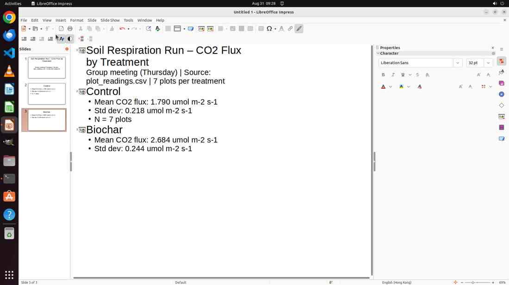
step 39 01:29:03
THINKINGContinuing. Now: Return, type "n = 7 plots", Return, shift+Tab, type "Compost", Return, Tab, type mean, etc. Let me proceed step by step. Return first.
EXECUTED (pyautogui in VM)pyautogui.press("return")
step 40 01:29:13
THINKINGNow type "n = 7 plots" for Biochar.
TOOL CALL<tool_call>
<function=computer_use>
<parameter=action>
type
</parameter>
<parameter=text>
n = 7 plots
</parameter>
</function>
</tool_call>
EXECUTED (pyautogui in VM)pyautogui.typewrite("n = 7 plots")
step 41 01:29:25
THINKINGBiochar is complete. Now create Compost slide: Return (new body line), shift+Tab (promote to title), type "Compost", Return, Tab, type mean, Return, type std, Return, type n. Let me proceed. Return first.
ACTIONBiochar is done. Now the Compost slide — Return then promote to title.
THINKINGBack to slide 4 with a body bullet under Compost. Now type the Compost body lines: mean, std, n. Then continue to Nitrogen. Let me type the mean line.
TOOL CALL<tool_call>
<function=computer_use>
<parameter=action>
type
</parameter>
<parameter=text>
Mean CO2 flux: 3.477 umol m-2 s-1
</parameter>
</function>
</tool_call>
EXECUTED (pyautogui in VM)pyautogui.typewrite("Mean CO2 flux: 3.477 umol m-2 s-1")
step 47 01:30:18
THINKINGContinuing Compost. Return, type std, Return, type n, Return, shift+Tab, type Nitrogen, Return, Tab, type mean, Return, type std, Return, type n, Return, shift+Tab, type Conclusion, Return, Tab, type body. Let me do Return then std.